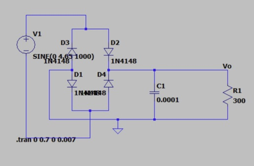
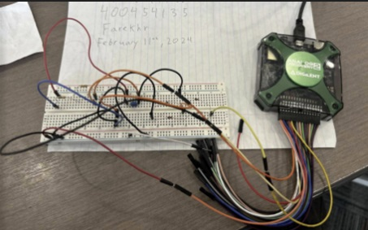
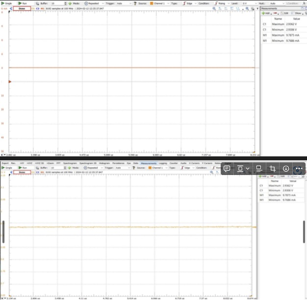

AC to DC Power Supply
Project Overview
Introduction:
- Title: AC to DC Power Supply
- Duration: January 2024 - February 2024
- Role: Project Engineer
- Technologies Used: Breadboard, Electronic components LT Spice, Waveforms Software, Analog Discovery 2
Summary:
The goal of this project was to design and implement a DC power supply capable of delivering 10mA at approximately 3V. This involved converting 120V AC voltage to a stable 3V DC output using a circuit that incorporated a full wave rectifier and a capacitor filter. Key components of the circuit included diodes for rectification and a capacitor to smooth the output voltage.
Design Implementation and Testing:
- Rectifier: Utilized a bridge configuration with four diodes to convert AC to DC, ensuring that both halves of the AC sine wave contributed to the output.
- Filter: Employed a 100 micro-Farad capacitor in parallel with the load to reduce voltage ripple and stabilize the DC output.
- Transformer Simulation: Simulated a step-down transformer in LTSpice due to safety concerns, using an input voltage of 4.65V to achieve desired output after theoretical and trial adjustments.
Project Achievements
- Stable DC Output: Successfully designed a power supply that converts 120V AC to a stable 3V DC with minimal ripple.
- Effective Rectification: Implemented a full wave rectifier that efficiently converts both halves of the AC sine wave to DC.
- Optimized Filtering: Utilized a capacitor filter to significantly reduce voltage ripple, achieving a smooth DC output.
- Real-World Validation: Confirmed the theoretical design with practical tests using Analog Discovery 2, achieving consistent and reliable results.
Gallery/Visuals
Circuit Schematic:
Real-World Implementation Using AD2 and Breadboard:
Measured Voltage and Current through the Load:
Challenges and Solutions
- Challenge: Achieving a stable and low ripple DC output without a physical transformer.
- Solution: Optimized the capacitor value and simulated transformer characteristics in LTSpice, followed by real-world validation using AD2 which supports a maximum of 10V output.
Measurement and Analysis
- Load Resistance: Used a load resistance of 300 ohms with a design current of 10mA.
- Capacitance Choice: Selected the highest available capacitance to minimize ripple effectively.
- Real-world Measurements: Utilized AD2 for precise real-world measurements, achieving a stable output close to theoretical expectations with minimal discrepancies.
Future Directions
- Enhancement of Filter Design: Explore higher capacitance values or additional filtering techniques to further smooth the output voltage.
- Integration of a Regulator: Consider incorporating a voltage regulator to enhance output stability and compensate for variations in load or input voltage.